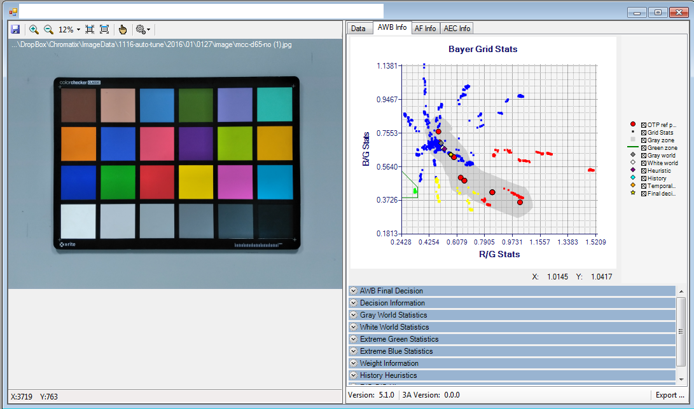
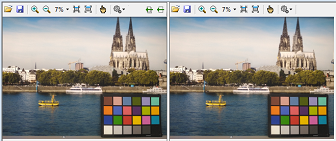
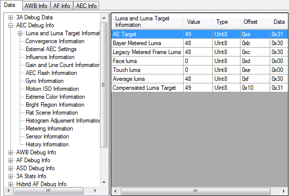
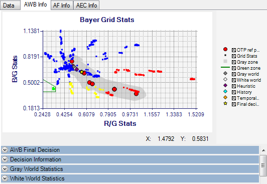
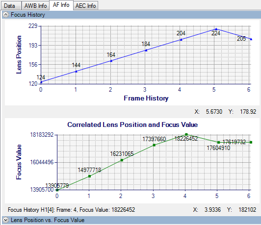
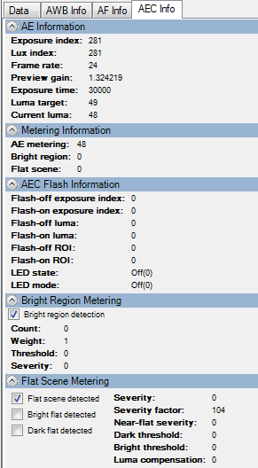

The 3A debug information visualization feature allows you to review 3A
values from the EXIF data associated with a specified JPEG file.
-
Enable 3A EXIF information in captured JPEG images using the
procedure in the section Enable EXIF debug information.
-
Select to open a JPEG file in the Image Viewer. Alternatively, drag the
JPEG file into the Image Viewer on the right side of the Chromatix main window.
When the Image Viewer opens, the JPEG image displays on the right side and the
3A debug information appears on the left side.

It may be helpful to place two images side by side within a frame for
comparison. To do this, follow these steps:
- Use CTRL + Drag to copy the first image into a new frame.
- Use Ctrl + Drag to drag the second image on top of that new frame.
- Use the delta and overlay icons, on the right side of the first frame,
to evaluate the differences between the images.

-
Click the Data tab for information
about the AWB, AEC, AF, and ASD values for the current image. The information
may be helpful when performing 3A tuning tasks.

For example, to find the Color Temperature of the JPEG image, expand
AWB Debug Info and click AWB Output
Information.
-
Click the AWB Info tab to view Bayer
grid statistics for the JPEG image currently in the Image Viewer window. Other
AWB diagnostic information is in a series of panels that open below the graph.

-
Click the AF Info tab to view focus
history information for the JPEG image currently in the Image Viewer window. The
information is in a series of panels that open to display diagnostic
information.

-
Click the AEC Info tab to view
exposure-related diagnostic information for the JPEG image currently loaded into
the Image Viewer window. The information is in a series of panels that open to
display diagnostic information.

-
Click
Export to save the 3A debug information to an
external .txt file.